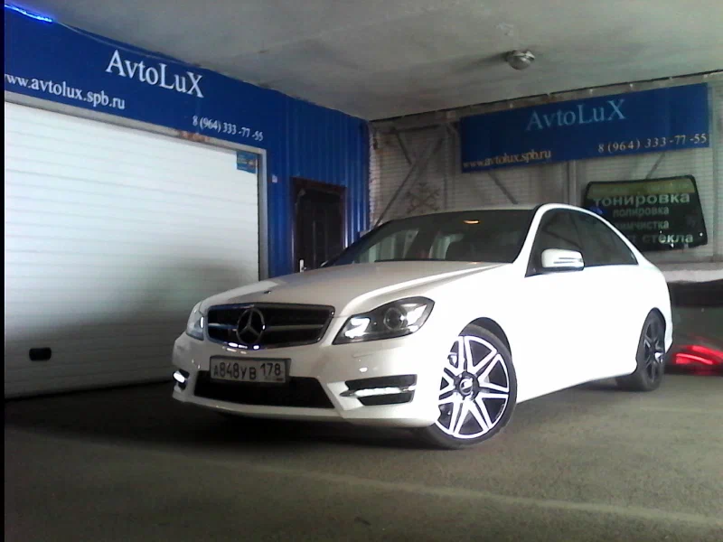
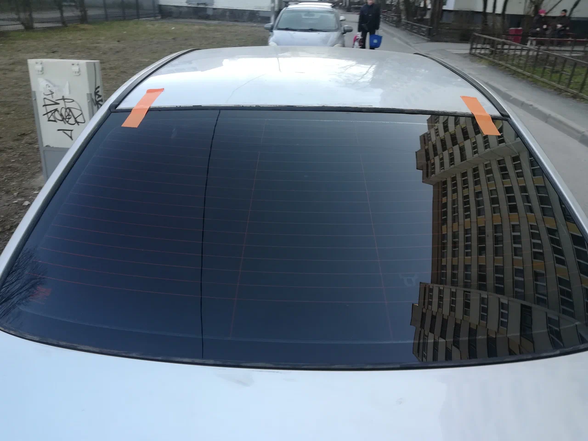
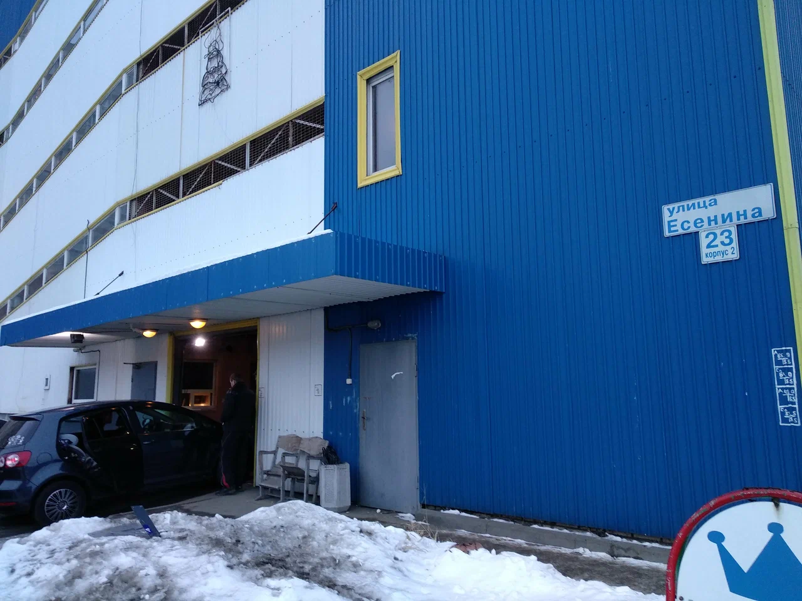

АВТОМОБИЛЬ МОЖЕТ БЫТЬ БОЛЬШЕ, ЧЕМ ТРАНСПОРТ
ХАРАКТЕР
В ДЕТАЛЯХ.
Правильный оттенок стёкол. Глубокий блеск.
То самое чувство, когда оборачиваешься
на свою машину.
✳ ТО, ЗА ЧЕМ К НАМ ПРИЕЗЖАЮТ
AVTOLUX / САНКТ-ПЕТЕРБУРГДРУГОЙ ВИД.
ТОТ ЖЕ ВЫ.
От первого слоя плёнки до финального блика.
Подберём решение под ваш автомобиль
и то, каким вы хотите его видеть.

Тонировка стёкол
Больше приватности. Меньше лишнего света.
Классическая и атермальная тонировка, подбор оттенка и замена старой плёнки.
Защита и стайлинг
Сохранить внешний вид или добавить характер. Антигравийная плёнка, виниловая оклейка и бронирование фар.
Полировка и детейлинг
Глубина цвета, чистые отражения и ухоженный салон. Полировка кузова, стёкол и фар, защитные покрытия и химчистка.
Ремонт и замена стёкол
Если прилетел камень или стекло требует замены. Ремонт сколов и трещин, установка автостёкол и полировка.
Стоимость зависит от автомобиля, материала и объёма работ. Детали можно обсудить с мастером ↗
✳ НЕСКОЛЬКО МОМЕНТОВ ИЗ МАСТЕРСКОЙ
Вся галерея на Яндекс Картах ↗БЕЗ ЛИШНИХ
СЛОВ.
Реальные машины. Реальная студия.
Фото из нашей карточки на Яндекс Картах.
✳ СЛОВО ТЕМ, КТО УЖЕ ПРИЕЗЖАЛ
ОТЗЫВЫ ИЗ ЯНДЕКС КАРТРЕПУТАЦИЯ —
В ДЕТАЛЯХ ТОЖЕ.
5,0
Санкт-Петербург
ВСТРЕТИМСЯ В МАСТЕРСКОЙ
ДОБАВИМ
ХАРАКТЕРА?
Плёнку лучше видеть вживую.
А свой автомобиль — в хороших руках.
Санкт-Петербург
ул. Есенина, 23, корпус 2
М Проспект Просвещения
740 м пешком
Перед визитом согласуйте время и нужную услугу по телефону.